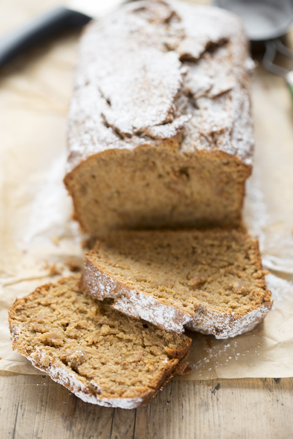

Ingredientes
3 ovos
150 g manteiga
1 xícara leite de coco
1 xícara açúcar mascavo
1 xícara farinha de aveia
30 g fermento em pó
200 g pasta de amendoim
Instruções de Preparo
1. Bata a manteiga com o açúcar até ficar uma massa homogênea.
2. Em seguida, acrescente as gemas e volta a mexer.
3. Depois, é o momento de incluir a pasta de amendoim.
4. Insira o leite de coco, a farinha de aveia e o fermento até que a mistura se torne pastosa e condensada.
5. O último passo é bater as claras até que elas formem uma espuma grossa e colocá-las no recipiente. Mexa tudo uma última vez.
6. Para encerrar, unte uma forma com um pouco de manteiga e farinha e coloque a massa.
7. Leve-a ao forno aquecido a 180º por 30/40 minutos e pronto. É só apreciar o resultado.